if (!requireNamespace("devtools")) {
install.packages("devtools")
}
devtools::install_github("paul-buerkner/brms")8 JAGS brms
We, of course, will be using brms in place of JAGS.
8.1 JAGS brms and its relation to R
In the opening paragraph in his GitHub repository for brms, Bürkner explained:
The brms package provides an interface to fit Bayesian generalized (non-)linear multivariate multilevel models using Stan, which is a C++ package for performing full Bayesian inference (see http://mc-stan.org/). The formula syntax is very similar to that of the package lme4 to provide a familiar and simple interface for performing regression analyses. A wide range of response distributions are supported, allowing users to fit – among others – linear, robust linear, count data, survival, response times, ordinal, zero-inflated, and even self-defined mixture models all in a multilevel context. Further modeling options include non-linear and smooth terms, auto-correlation structures, censored data, missing value imputation, and quite a few more. In addition, all parameters of the response distribution can be predicted in order to perform distributional regression. Multivariate models (i.e., models with multiple response variables) can be fit, as well. Prior specifications are flexible and explicitly encourage users to apply prior distributions that actually reflect their beliefs. Model fit can easily be assessed and compared with posterior predictive checks, cross-validation, and Bayes factors. (emphasis in the original)
Bürkner’s brms repository includes many helpful links, such as to where brms lives on CRAN, a list of blog posts highlighting brms, and a forum where users can ask questions about brms in specific or about Stan in general.
You can install the current official version of brms in the same way you would any other R package (i.e., install.packages("brms", dependencies = T)). If you want the current developmental version, you could download it from GitHub by executing the following.
Here we load the primary packages for this chapter.
library(tidyverse)
library(patchwork)
library(cowplot)
library(brms)
library(bayesplot)
library(tidybayes)
library(ggthemes)8.2 A complete example
We express the likelihood for our coin toss example as
\[y_i \sim \operatorname{Bernoulli}(\theta).\]
Our prior will be
\[\theta \sim \operatorname{Beta}(\alpha, \beta).\]
Kruschke pictured the relationships among the data, the likelihood, and the prior in the model diagram in Figure 8.2 (p. 196). If you’re tricky, you can make those in R. I’m not going to walk my method out in great detail in this ebook. If you want a step-by-step tutorial, check my blog post, Make model diagrams, Kruschke style. Here’s the code for our version of Figure 8.2.
# Plot of a beta density
p1 <- tibble(x = seq(from = 0.01, to = 0.99, by = 0.01),
d = (dbeta(x, 2, 2)) / max(dbeta(x, 2, 2))) |>
ggplot(aes(x = x, y = d)) +
geom_area(fill = "grey67") +
annotate(geom = "text",
x = 0.5, y = 0.2,
label = "beta",
size = 7) +
annotate(geom = "text",
x = 0.5, y = 0.6,
label = "italic(A)*', '*italic(B)",
family = "Times", parse = TRUE, size = 7) +
scale_x_continuous(expand = c(0, 0)) +
theme_void() +
theme(axis.line.x = element_line(linewidth = 0.5))
## An annotated arrow
# Save our custom arrow settings
my_arrow <- arrow(angle = 20, length = unit(0.35, "cm"), type = "closed")
p2 <- tibble(x = 0.5,
y = 1,
xend = 0.5,
yend = 0) |>
ggplot(aes(x = x, xend = xend,
y = y, yend = yend)) +
geom_segment(arrow = my_arrow) +
annotate(geom = "text",
x = 0.375, y = 1/3,
label = "'~'",
family = "Times", parse = TRUE, size = 10) +
xlim(0, 1) +
theme_void()
# Bar plot of Bernoulli data
p3 <- tibble(x = 0:1,
d = (dbinom(x, size = 1, prob = 0.6)) / max(dbinom(x, size = 1, prob = 0.6))) |>
ggplot(aes(x = x, y = d)) +
geom_col(fill = "grey67", width = 0.4) +
annotate(geom = "text",
x = 0.5, y = 0.2,
label = "Bernoulli",
size = 7) +
annotate(geom = "text",
x = 0.5, y = 0.94,
label = "theta",
family = "Times", parse = TRUE, size = 7) +
xlim(-0.75, 1.75) +
theme_void() +
theme(axis.line.x = element_line(linewidth = 0.5))
# Another annotated arrow
p4 <- tibble(x = c(0.375, 0.625),
y = c(1/3, 1/3),
label = c("'~'", "italic(i)")) |>
ggplot(aes(x = x, y = y, label = label)) +
geom_text(family = "Times", parse = TRUE, size = c(10, 7)) +
geom_segment(x = 0.5, xend = 0.5,
y = 1, yend = 0,
arrow = my_arrow) +
xlim(0, 1) +
theme_void()
# Some text
p5 <- tibble(x = 1,
y = 0.5,
label = "italic(y[i])") |>
ggplot(aes(x = x, y = y, label = label)) +
geom_text(family = "Times", parse = TRUE, size = 7) +
xlim(0, 2) +
theme_void()layout <- c(
area(t = 1, b = 2, l = 1, r = 1),
area(t = 3, b = 3, l = 1, r = 1),
area(t = 4, b = 5, l = 1, r = 1),
area(t = 6, b = 6, l = 1, r = 1),
area(t = 7, b = 7, l = 1, r = 1))
(p1 + p2 + p3 + p4 + p5) +
plot_layout(design = layout) &
ylim(0, 1) &
theme(plot.margin = margin(0, 5.5, 0, 5.5))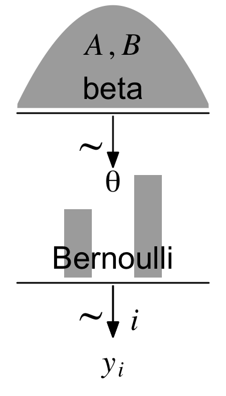
Diagrams like Figure 8.2 should be scanned from the bottom up. This is because models of data always start with the data, then conceive of a likelihood function that describes the data values in terms of meaningful parameters, and finally determine a prior distribution over the parameters. (p. 196)
8.2.1 Load data
“Logically, models of data start with the data. We must know their basic scale and structure to conceive of a descriptive model” (p. 197).
Here we load the data with the readr::read_csv() function, the tidyverse version of base R read.csv().
my_data <- read_csv("data.R/z15N50.csv")Unlike what Kruschke wrote about JAGS, the brms package does not require us to convert the data into a list. It can handle data in lists or data frames, of which tibbles are a special case. Here are what the data look like.
glimpse(my_data)Rows: 50
Columns: 1
$ y <dbl> 0, 1, 0, 0, 0, 0, 0, 0, 0, 0, 1, 0, 0, 0, 1, 1, 1, 0, 0, 1, 0, 0, 0, 0, 1, 1, 0, 0, 0, 0, 0, 1, 0, 1, 0, 1, 0, 0, 0, 1…We might visualize them in a bar plot.
my_data |>
mutate(y = y |> as.character()) |>
ggplot(aes(x = y)) +
geom_bar() +
scale_y_continuous(expand = expansion(mult = c(0, 0.05))) +
theme_minimal_hgrid()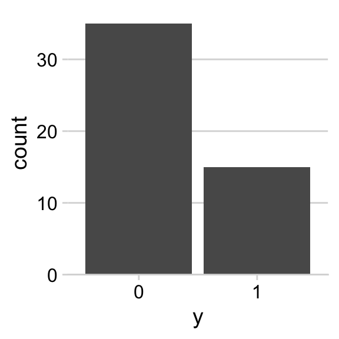
For the past couple chapters, we’ve been using the cowplot::theme_cowplot() theme for our plots. The cowplot package, however, includes a few more. The theme_minimal_grid() is similar, but subtracts the axis lines and adds in minimalistic grid lines. In his (2020) Themes vignette, however, Wilke showed vertical grid lines are often unsightly in bar plots. To avoid offending Wilke with our grid lines, we used the theme_minimal_hgrid() theme, which only added horizontal grid lines.
Anyway, if you wanted to compute “Ntotal”, the number of rows in our tibble, one way is with count().
my_data |>
count()# A tibble: 1 × 1
n
<int>
1 50However, we’re not going to do anything with an “Ntotal” value. For brms, the data are fine in their current data frame form. No need for a dataList.
8.2.2 Specify model
The brms package does not have code blocks following the JAGS format or the sequence in Kruschke’s diagrams. Rather, its syntax is modeled in part after the popular frequentist mixed-effects package, lme4. To learn more about how brms compares to lme4, see Bürkner’s (2017) overview, brms: An R package for Bayesian multilevel models using Stan.
The primary function in brms is brm(). Into this one function we will specify the data, the model, the likelihood function, the prior(s), and any technical settings such as the number of MCMC chains, iterations, and so forth. You can order the arguments in any way you like. My typical practice is to start with data, family (i.e., the likelihood function), the model formula, and my priors. If there are any technical specifications such as the number of MCMC iterations I’d like to change from their default values, I usually do that last.
Here’s how to fit the model.
fit8.1 <- brm(
data = my_data,
family = bernoulli(link = identity),
formula = y ~ 1,
prior(beta(2, 2), class = Intercept, lb = 0, ub = 1),
iter = 500 + 3334, warmup = 500, chains = 3,
seed = 8,
file = "fits/fit08.01")Also note our use of the file argument. This automatically saved the fit object as an external file. You don’t have to do that and you can avoid doing so by omitting the file argument. For a more detailed explanation of the brms::brm() function, spend some time with the brm section of the brms reference manual (Bürkner, 2022a).
8.2.3 Initialize chains
In Stan, and in brms by extension, the initial values have default settings. In the Initialization section of the Program Execution chapter in the Stan reference manual, Version 2.29 (Stan Development Team, 2022a) we read:
If there are no user-supplied initial values, the default initialization strategy is to initialize the unconstrained parameters directly with values drawn uniformly from the interval \((−2, 2)\). The bounds of this initialization can be changed but it is always symmetric around \(0\). The value of \(0\) is special in that it represents the median of the initialization. An unconstrained value of \(0\) corresponds to different parameter values depending on the constraints declared on the parameters.
In general, I do not recommend setting custom initial values in brms or Stan. Under the hood, Stan will transform the parameters to the unconstrained space in models where they are bounded. In our Bernoulli model, \(\theta\) is bounded at 0 and 1. A little further down in the same section, we read:
For parameters bounded above and below, the initial value of \(0\) on the unconstrained scale corresponds to a value at the midpoint of the constraint interval. For probability parameters, bounded below by \(0\) and above by \(1\), the transform is the inverse logit, so that an initial unconstrained value of \(0\) corresponds to a constrained value of \(0.5\), \(-2\) corresponds to \(0.12\) and \(2\) to \(0.88\). Bounds other than \(0\) and \(1\) are just scaled and translated.
If you want to play around with this, have at it. In my experience, it sometimes helps to set these manually to zero, which you can do that by specifying inits = 0 within brm(). But if you really want to experiment, you might check out my blog post, Don’t forget your inits.
8.2.4 Generate chains
By default, brms will use 4 chains of 2,000 iterations each. The type of MCMC brms uses is Hamiltonian Monte Carlo (HMC). You can learn more about HMC at the Stan website, https://mc-stan.org, which includes resources such as the Stan user’s guide (Stan Development Team, 2022b), the Stan reference manual (Stan Development Team, 2022a), and a list of tutorials. McElreath has a nice intro lecture on MCMC in general and HMC in particular. Michael Bentacourt has some good lectures on Stan and HMC, such as here and here. And, of course, we will cover HMC with Kruschke in Chapter 14.
Within each HMC chain, the first \(n\) iterations are warmups. Within the Stan-HMC paradigm, warmups are somewhat analogous to but not synonymous with burn-in iterations as done by the Gibbs sampling in JAGS. But HMC warmups are like Gibbs burn-ins in that both are discarded and not used to describe the posterior. As such, the brms default settings yield 1,000 post-warmup iterations for each of the 4 HMC chains. However, we specified iter = 500 + 3334, warmup = 500, chains = 3. Thus instead of defaults, we have 3 HMC chains. Each chain has 500 + 3,334 = 3,834 total iterations, of which 500 were discarded warmup iterations.
To learn more about the warmup stage in Stan, check out the HMC Algorithm Parameters section of the MCMC Sampling chapter of the Stan reference manual.
8.2.5 Examine chains
The brms::plot() function returns a density and trace plot for each model parameter.
plot(fit8.1)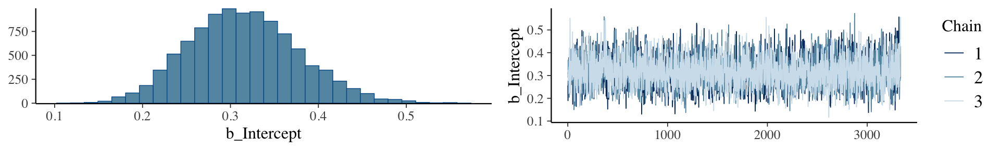
Note how the brms::plot() function simply took our model fit object as input. Other post-processing functions will require us to pass the posterior draws in the form of a data frame. To get ready for them, here we’ll save them as a data frame with the as_draws_df() function.
draws <- as_draws_df(fit8.1) If you want to display each chain as its own density, you can use the handy mcmc_dens_overlay() function from the bayesplot package to return the overlaid densities.
draws |>
mutate(chain = .chain) |>
mcmc_dens_overlay(pars = vars(b_Intercept)) +
theme_minimal_hgrid()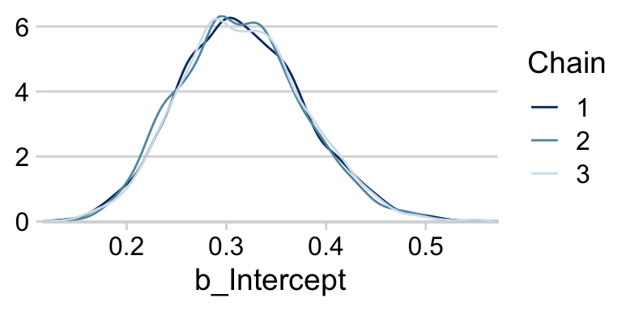
The bayesplot::mcmc_acf() function will give us the autocorrelation plots.
draws |>
mutate(chain = .chain) |>
mcmc_acf(pars = vars(b_Intercept), lags = 35) +
theme_minimal_hgrid()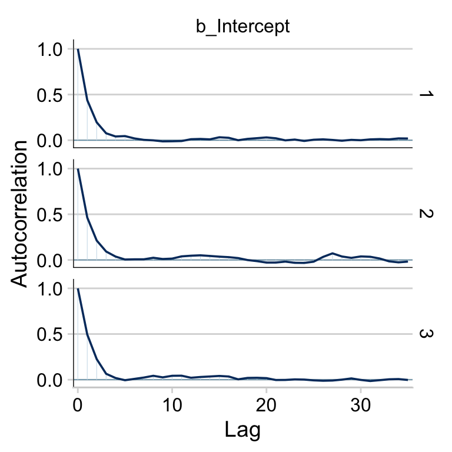
With brms, we can compute the \(\widehat R\) value for each parameter with the rhat() function. But rather than a running vector, we get a single value per parameter.
brms::rhat(fit8.1, pars = "b_Intercept")b_Intercept
1.001789 Note the use of the brms::rhat() syntax. The brms rhat() function is imported from the posterior package, and is designed to work directly with brm() models. However, the rhat() function from posterior is designed to take objects of class draws as input, not brm() models. Thus if you want to use the brm() fit objects as input, you’re best off using the explicit brms::rhat() syntax to clarify which version of the rhat() function you’re working with. If however you’d like to use a more posterior package based workflow, You might execute something like this.
posterior::extract_variable_matrix(fit8.1, "Intercept") |>
posterior::rhat()[1] 1.001789To complicate matters further, the bayesplot package also has an rhat() function, which is not currently applicable for objects of class brmsfit.
We’ll have to employ brms::as.mcmc() and coda::gelman.plot() to make our running \(\widehat R\) plot.
fit8.1_c <- as.mcmc(fit8.1)
coda::gelman.plot(fit8.1_c[, "b_Intercept", ])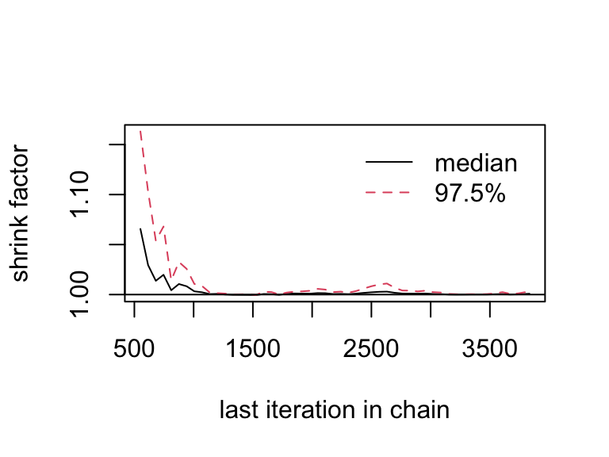
For whatever reason, many of the package developers within the Stan/brms ecosystem don’t seem interested in shrink factor plots, like this.
8.2.5.1 The plotPost function How to plot your brms posterior distributions
plotPost functionWe’ll get into plotting in just a moment. But before we do, here’s a summary of the model.
print(fit8.1) Family: bernoulli
Links: mu = identity
Formula: y ~ 1
Data: my_data (Number of observations: 50)
Draws: 3 chains, each with iter = 3834; warmup = 500; thin = 1;
total post-warmup draws = 10002
Regression Coefficients:
Estimate Est.Error l-95% CI u-95% CI Rhat Bulk_ESS Tail_ESS
Intercept 0.32 0.06 0.20 0.44 1.00 3338 4646
Draws were sampled using sampling(NUTS). For each parameter, Bulk_ESS
and Tail_ESS are effective sample size measures, and Rhat is the potential
scale reduction factor on split chains (at convergence, Rhat = 1).To summarize a posterior in terms of central tendency, brms defaults to the mean value (i.e., the value in the ‘Estimate’ column of the print() output). In many of the other convenience functions, you can also request the median instead. For example, we can set robust = TRUE to get the ‘Estimate’ in terms of the median.
posterior_summary(fit8.1, robust = TRUE) Estimate Est.Error Q2.5 Q97.5
b_Intercept 0.3127957 0.06276154 0.20027829 0.4443952
Intercept 0.3127957 0.06276154 0.20027829 0.4443952
lprior 0.2544309 0.10549228 -0.03977943 0.3928712
lp__ -32.0706829 0.30670750 -34.35060643 -31.8453079Across functions, the intervals default to 95%. With print() and summary() you can adjust the level with a prob argument. For example, here we’ll use 50% intervals.
print(fit8.1, prob = 0.5) Family: bernoulli
Links: mu = identity
Formula: y ~ 1
Data: my_data (Number of observations: 50)
Draws: 3 chains, each with iter = 3834; warmup = 500; thin = 1;
total post-warmup draws = 10002
Regression Coefficients:
Estimate Est.Error l-50% CI u-50% CI Rhat Bulk_ESS Tail_ESS
Intercept 0.32 0.06 0.27 0.36 1.00 3338 4646
Draws were sampled using sampling(NUTS). For each parameter, Bulk_ESS
and Tail_ESS are effective sample size measures, and Rhat is the potential
scale reduction factor on split chains (at convergence, Rhat = 1).But in many other brms convenience functions, you can use the probs argument to request specific percentile summaries.
posterior_summary(fit8.1, probs = c(0.025, 0.25, 0.75, 0.975)) Estimate Est.Error Q2.5 Q25 Q75 Q97.5
b_Intercept 0.3154747 0.06269561 0.20027829 0.2714084 0.3561130 0.4443952
Intercept 0.3154747 0.06269561 0.20027829 0.2714084 0.3561130 0.4443952
lprior 0.2344701 0.11366004 -0.03977943 0.1709870 0.3190203 0.3928712
lp__ -32.3490602 0.71573935 -34.35060643 -32.5155854 -31.8983534 -31.8453079Regardless of what prob or probs levels you use, brms functions always return percentile-based estimates. All this central tendency and interval talk will be important in a moment…
When plotting the posterior distribution of a parameter estimated with brms, you typically do so working with the results of an object returned by one of the as_draws_ functions. Recall we already saved those results as draws. Here’s a look at draws.
head(draws)# A draws_df: 6 iterations, 1 chains, and 4 variables
b_Intercept Intercept lprior lp__
1 0.26 0.26 0.133 -32
2 0.19 0.19 -0.080 -34
3 0.21 0.21 0.011 -33
4 0.27 0.27 0.165 -32
5 0.28 0.28 0.193 -32
6 0.31 0.31 0.244 -32
# ... hidden reserved variables {'.chain', '.iteration', '.draw'}With draws in hand, we can use ggplot2 to do the typical distributional plots, such as with geom_histogram().
draws |>
ggplot(aes(x = b_Intercept)) +
geom_histogram(color = "grey92", fill = "grey67",
linewidth = 0.2) +
scale_y_continuous(expand = expansion(mult = c(0, 0.05))) +
labs(x = expression(theta),
title = "Theta via ggplot2::geom_histogram()") +
theme_minimal_hgrid() +
theme(plot.title.position = "plot")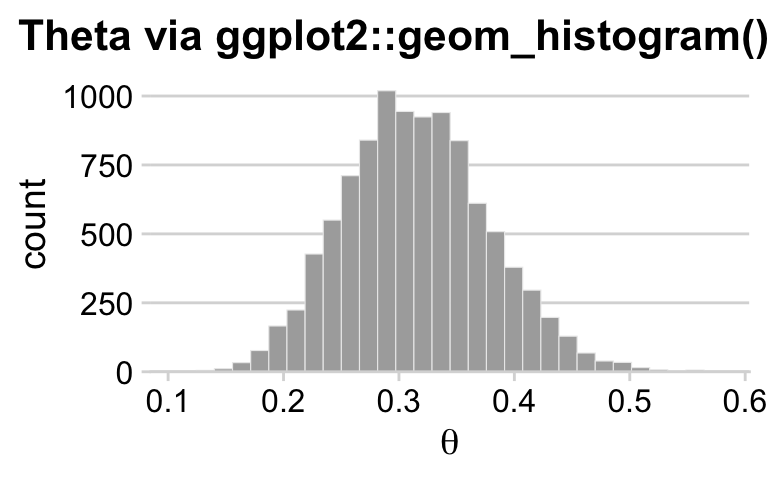
The bayesplot::mcmc_areas() function offers a nice way to depict the posterior densities, along with their percentile-based 50% and 95% ranges.
mcmc_areas(
draws,
pars = vars(b_Intercept),
prob = 0.5,
prob_outer = 0.95,
point_est = "mean") +
scale_y_discrete(expand = expansion(mult = c(0, 0.05))) +
labs(x = expression(theta),
title = "Theta via bayesplot::mcmc_areas()") +
theme_minimal_hgrid() +
theme(plot.title.position = "plot")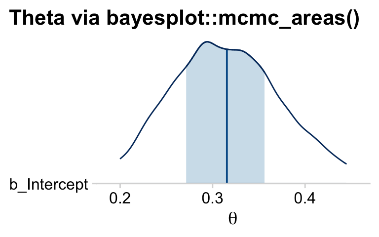
brms doesn’t have a convenient way to compute the posterior mode or HDIs. Base R is no help, either. But Matthew Kay’s tidybayes package makes it easy to compute posterior modes and HDIs with handy functions like stat_halfeye() and stat_histinterval().
draws |>
ggplot(aes(x = b_Intercept, y = 0)) +
stat_halfeye(point_interval = mode_hdi, .width = c(0.95, 0.5)) +
scale_y_continuous(NULL, breaks = NULL) +
labs(x = expression(theta),
title = expression(theta*" via tidybayes::stat_halfeye()")) +
theme_minimal_hgrid()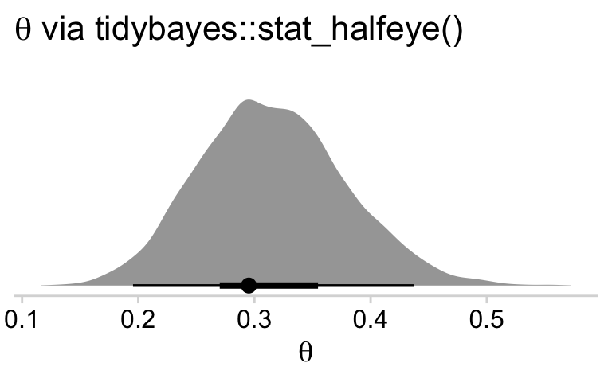
draws |>
ggplot(aes(x = b_Intercept, y = 0)) +
stat_histinterval(point_interval = mode_hdi, .width = c(0.95, 0.5)) +
scale_y_continuous(NULL, breaks = NULL) +
labs(x = expression(theta),
title = expression(theta*" via tidybayes::stat_histinterval()")) +
theme_minimal_hgrid()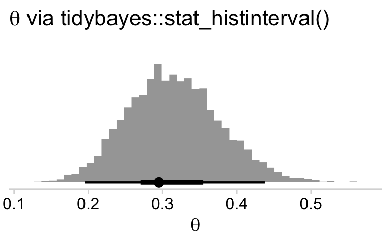
The tidybayes::stat_halfeye() function returns a density with a measure of the posterior’s central tendency in a dot and one or multiple interval bands as horizontal lines at the base of the density. The stat_histinterval() function returns much the same, but replaces the density with a histogram. For both functions, the point_interval = mode_hdi argument allowed us to request the mode to be our measure of central tendency and the highest posterior density intervals to be our type intervals. With .width = c(0.95, 0.5), we requested our HDIs be at both the 95% and 50% levels.
If we wanted to be more congruent with Kruschke’s plotting sensibilities, we could further modify tidybayes::stat_histinterval().
# This is unnecessary, but makes for nicer x-axis breaks
my_breaks <- mode_hdi(draws$b_Intercept)[, 1:3] |>
pivot_longer(cols = everything(), values_to = "breaks") |>
mutate(labels = breaks |> round(digits = 3))
# Here's the main plot code
draws |>
ggplot(aes(x = b_Intercept, y = 0)) +
stat_histinterval(point_interval = mode_hdi, .width = 0.95,
fill = "steelblue", slab_color = "white",
breaks = 40, outline_bars = TRUE, slab_size = 0.25) +
scale_x_continuous(breaks = my_breaks$breaks,
labels = my_breaks$labels) +
scale_y_continuous(NULL, breaks = NULL) +
labs(x = expression(theta),
title = "tidybayes::stat_histinterval() all gussied up") +
theme_minimal_hgrid() +
theme(title = element_text(size = 10.5))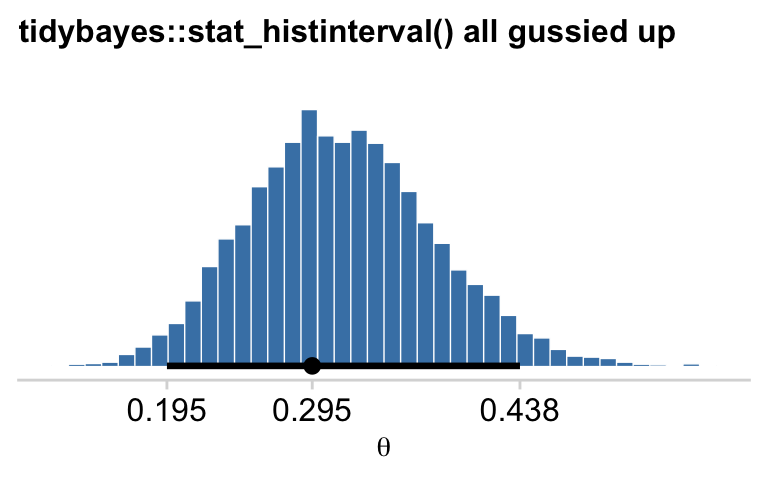
With the point_interval argument within stat_histinterval() and related functions, we can request different combinations of measures of central tendency (i.e., mean, median, mode) and interval types (i.e., percentile-based and HDIs). Although all of these are legitimate ways to summarize a posterior, they can yield somewhat different results. For example, here we’ll contrast our mode + HDI summary with a median + percentile-based interval summary using tidybayes::stat_pointinterval().
draws |>
ggplot(aes(x = b_Intercept)) +
stat_pointinterval(aes(y = 1), point_interval = median_qi, .width = c(0.95, 0.5)) +
stat_pointinterval(aes(y = 2), point_interval = mode_hdi, .width = c(0.95, 0.5)) +
scale_y_continuous(NULL, breaks = 1:2,
labels = c("median_qi", "mode_hdi")) +
coord_cartesian(ylim = c(0, 3)) +
labs(x = expression(theta),
title = "Theta via tidybayes::stat_pointinterval()") +
theme_minimal_vgrid() +
theme(axis.line.y.left = element_blank(),
axis.text.y = element_text(hjust = 0),
axis.ticks.y = element_blank(),
plot.title.position = "plot",
title = element_text(size = 10.5))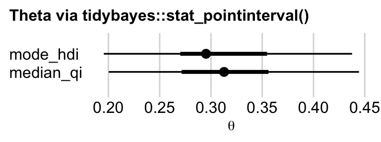
Similar, yet distinct. To get a sense of the full variety of ways tidybayes allows users to summarize and plot the results of a Bayesian model, check out Kay’s (2022) vignette, Slab + interval stats and geoms. Also, did you notice how we switched to theme_minimal_vgrid()? That’s how we added the vertical grid lines in the absence of horizontal grid lines.
8.3 Simplified scripts for frequently used analyses
A lot has happened in R for Bayesian analysis since Kruschke wrote his (2015) text. In addition to our use of the tidyverse, the brms, bayesplot, and tidybayes packages offer an array of useful convenience functions. We can and occasionally will write our own. But really, the rich R ecosystem already has us pretty much covered.
8.4 Example: Difference of biases
Here are our new data.
my_data <- read_csv("data.R/z6N8z2N7.csv")
glimpse(my_data)Rows: 15
Columns: 2
$ y <dbl> 1, 0, 1, 1, 1, 1, 1, 0, 0, 0, 1, 0, 0, 1, 0
$ s <chr> "Reginald", "Reginald", "Reginald", "Reginald", "Reginald", "Reginald", "Reginald", "Reginald", "Tony", "Tony", "Tony"…They look like this.
my_data |>
mutate(y = y |> as.character()) |>
ggplot(aes(x = y, fill = s)) +
geom_bar(show.legend = F) +
scale_fill_colorblind() +
scale_y_continuous(expand = expansion(mult = c(0, 0.05))) +
theme_minimal_hgrid() +
facet_wrap(~ s)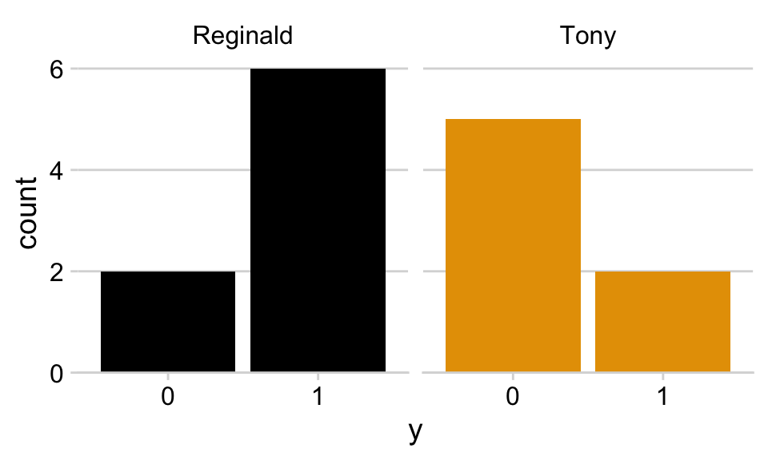
Note our use of the scale_fill_colorblind() function from the ggthemes package (Arnold, 2021). When you want to use color to emphasize different factor levels, such as s, it’s a good idea to make sure those colors can be distinguished by folks who are colorblind. The scale_fill_colorblind() function provides a discrete palette of eight colorblind safe colors. If you’d prefer to use a different palette, but wand to make sure its accessible to folks with colorblindness, check out the colorblindr package (McWhite & Wilke, 2021).
Here’s our ggplot2 version of the model diagram in Figure 8.5.
# Plot of a beta density
p1 <- tibble(x = seq(from = 0.01, to = 0.99, by = 0.01),
d = (dbeta(x, 2, 2)) / max(dbeta(x, 2, 2))) |>
ggplot(aes(x = x, y = d)) +
geom_area(fill = "steelblue") +
annotate(geom = "text",
x = 0.5, y = 0.2,
label = "beta",
size = 7) +
annotate(geom = "text",
x = 0.5, y = 0.6,
label = "italic(A)*', '*italic(B)",
family = "Times", parse = TRUE, size = 7) +
scale_x_continuous(expand = c(0, 0)) +
theme_void() +
theme(axis.line.x = element_line(linewidth = 0.5))
# An annotated arrow
p2 <- tibble(x = c(0.35, 0.65),
y = 1/3,
label = c("'~'", "italic(s)")) |>
ggplot(aes(x = x, y = y, label = label)) +
geom_text(family = "Times", parse = TRUE, size = c(10, 7)) +
geom_segment(x = 0.5, xend = 0.5,
y = 1, yend = 0,
arrow = my_arrow) +
xlim(0, 1) +
theme_void()
# Bar plot of Bernoulli data
p3 <- tibble(x = 0:1,
d = (dbinom(x, size = 1, prob = 0.6)) / max(dbinom(x, size = 1, prob = 0.6))) |>
ggplot(aes(x = x, y = d)) +
geom_col(fill = "steelblue", width = 0.4) +
annotate(geom = "text",
x = 0.5, y = 0.2,
label = "Bernoulli",
size = 7) +
annotate(geom = "text",
x = 0.5, y = 0.92,
label = "theta[italic(s)]",
family = "Times", parse = TRUE, size = 7) +
xlim(-0.75, 1.75) +
theme_void() +
theme(axis.line.x = element_line(linewidth = 0.5))
# Another annotated arrow
p4 <- tibble(x = c(0.35, 0.65),
y = c(1/3, 1/3),
label = c("'~'", "italic(i)*'|'*italic(s)")) |>
ggplot(aes(x = x, y = y, label = label)) +
geom_text(family = "Times", parse = TRUE, size = c(10, 7)) +
geom_segment(x = 0.5, xend = 0.5,
y = 1, yend = 0,
arrow = my_arrow) +
xlim(0, 1) +
theme_void()
# Some text
p5 <- tibble(x = 1,
y = 0.5,
label = "italic(y)[italic(i)*'|'*italic(s)]") |>
ggplot(aes(x = x, y = y, label = label)) +
geom_text(family = "Times", parse = TRUE, size = 7) +
xlim(0, 2) +
theme_void()
# Define the layout
layout <- c(
area(t = 1, b = 2, l = 1, r = 1),
area(t = 3, b = 3, l = 1, r = 1),
area(t = 4, b = 5, l = 1, r = 1),
area(t = 6, b = 6, l = 1, r = 1),
area(t = 7, b = 7, l = 1, r = 1))
# Combine, adjust, and display!
(p1 + p2 + p3 + p4 + p5) +
plot_layout(design = layout) &
ylim(0, 1) &
theme(plot.margin = margin(0, 5.5, 0, 5.5))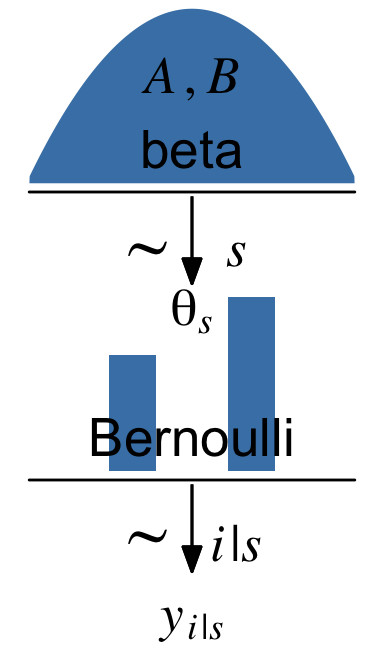
Here is how we might fit the model with brms::brm().
fit8.2 <- brm(
data = my_data,
family = bernoulli(identity),
y ~ 0 + s,
prior(beta(2, 2), class = b, lb = 0, ub = 1),
iter = 2000, warmup = 500, cores = 4, chains = 4,
seed = 8,
file = "fits/fit08.02")More typically, we’d parameterize the model as y ~ 1 + s. This form would yield an intercept and a slope. Behind the scenes, brms would treat the nominal s variable as an 0-1 coded dummy variable. One of the nominal levels would become the reverence category, depicted by the Intercept, and the difference between that and the other category would be the s slope. However, with our y ~ 0 + s syntax, we’ve suppressed the typical model intercept. The consequence is that each level of the nominal variable s gets its own intercept or [i] index, if you will. This is analogous to Kruschke’s y[i] ∼ dbern(theta[s[i]]) code.
All that aside, here are the chains.
plot(fit8.2, widths = 2:3)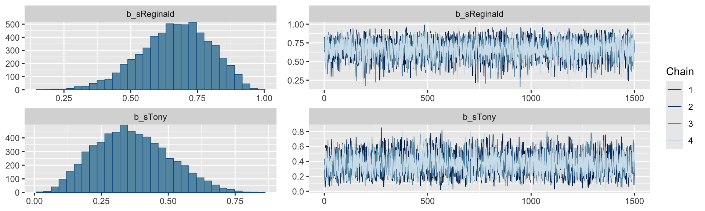
The model summary() is as follows:
summary(fit8.2) Family: bernoulli
Links: mu = identity
Formula: y ~ 0 + s
Data: my_data (Number of observations: 15)
Draws: 4 chains, each with iter = 2000; warmup = 500; thin = 1;
total post-warmup draws = 6000
Regression Coefficients:
Estimate Est.Error l-95% CI u-95% CI Rhat Bulk_ESS Tail_ESS
sReginald 0.67 0.13 0.39 0.89 1.00 5499 3554
sTony 0.36 0.14 0.12 0.66 1.00 4257 3625
Draws were sampled using sampling(NUTS). For each parameter, Bulk_ESS
and Tail_ESS are effective sample size measures, and Rhat is the potential
scale reduction factor on split chains (at convergence, Rhat = 1).The brms::pairs() function gets us the bulk of Figure 8.6.
pairs(fit8.2,
off_diag_args = list(alpha = 1/3, size = 1/3))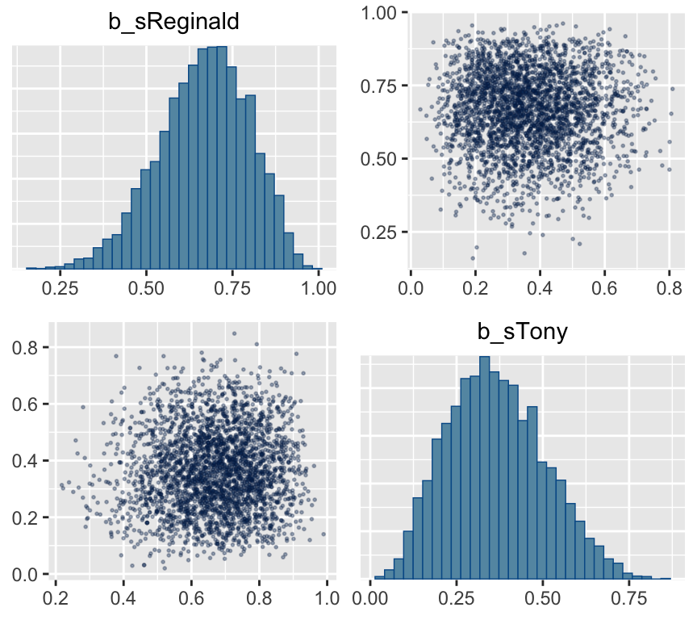
But to get at that difference-score distribution, we’ll have extract the posterior draws with as_draws_df(), make difference score with mutate(), and manually plot with ggplot2.
draws <- as_draws_df(fit8.2) |>
rename(theta_Reginald = b_sReginald,
theta_Tony = b_sTony) |>
mutate(`theta_Reginald - theta_Tony` = theta_Reginald - theta_Tony)
glimpse(draws)Rows: 6,000
Columns: 8
$ theta_Reginald <dbl> 0.6571504, 0.6542456, 0.6195691, 0.7408514, 0.6101853, 0.6052451, 0.7723177, 0.7280976, 0.…
$ theta_Tony <dbl> 0.26338501, 0.30348243, 0.43315839, 0.25802961, 0.61107854, 0.56859901, 0.19888110, 0.5775…
$ lprior <dbl> 0.453384887, 0.543126025, 0.734010037, 0.280083098, 0.710534932, 0.746609861, 0.008561683,…
$ lp__ <dbl> -11.53346, -11.36013, -11.43247, -11.72538, -12.71752, -12.29476, -12.41499, -12.39190, -1…
$ .chain <int> 1, 1, 1, 1, 1, 1, 1, 1, 1, 1, 1, 1, 1, 1, 1, 1, 1, 1, 1, 1, 1, 1, 1, 1, 1, 1, 1, 1, 1, 1, …
$ .iteration <int> 1, 2, 3, 4, 5, 6, 7, 8, 9, 10, 11, 12, 13, 14, 15, 16, 17, 18, 19, 20, 21, 22, 23, 24, 25,…
$ .draw <int> 1, 2, 3, 4, 5, 6, 7, 8, 9, 10, 11, 12, 13, 14, 15, 16, 17, 18, 19, 20, 21, 22, 23, 24, 25,…
$ `theta_Reginald - theta_Tony` <dbl> 0.3937653530, 0.3507632028, 0.1864106661, 0.4828218358, -0.0008932553, 0.0366461063, 0.573…long_draws <- draws |>
select(starts_with("theta")) |>
pivot_longer(cols = everything()) |>
mutate(name = factor(name, levels = c("theta_Reginald", "theta_Tony", "theta_Reginald - theta_Tony")))
long_draws |>
ggplot(aes(x = value, y = 0, fill = name)) +
stat_histinterval(point_interval = mode_hdi, .width = 0.95,
slab_color = "white", outline_bars = TRUE,
normalize = "panels") +
scale_fill_manual(values = colorblind_pal()(8)[2:4], breaks = NULL) +
scale_y_continuous(NULL, breaks = NULL) +
theme_minimal_hgrid() +
facet_wrap(~ name, scales = "free")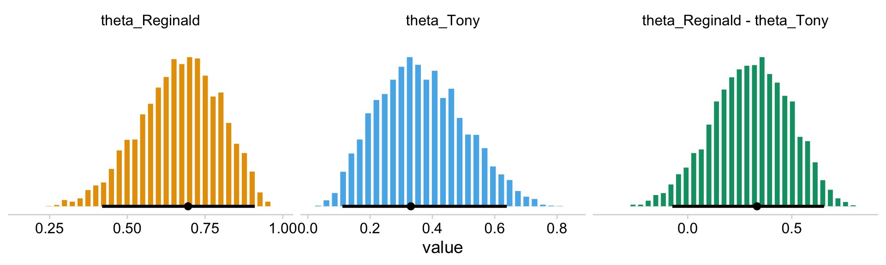
Note how this time we used the colorblind_pal() function within scale_fill_manual() to manually select three of the of the scale_fill_colorblind() colors.
Anyway, here’s a way to get the numeric summaries out of post.
long_draws |>
group_by(name) |>
mode_hdi()# A tibble: 3 × 7
name value .lower .upper .width .point .interval
<fct> <dbl> <dbl> <dbl> <dbl> <chr> <chr>
1 theta_Reginald 0.695 0.419 0.910 0.95 mode hdi
2 theta_Tony 0.331 0.111 0.639 0.95 mode hdi
3 theta_Reginald - theta_Tony 0.333 -0.0739 0.655 0.95 mode hdi In this context, the mode_hdi() summary yields:
name(i.e., the name we used to denote the parameters)value(i.e., the value of the measure of central tendency).lower(i.e., the lower level of the 95% HDI).upper(i.e., the upper level…).width(i.e., what interval we used).point(i.e., the type of measure of central tendency).interval(i.e., the type of interval)
8.5 Sampling from the prior distribution in JAGS brms
There are a few ways to sample from the prior distribution with brms. Here we’ll practice by setting sample_prior = "only". As a consequence, brm() will ignore the likelihood and return draws based solely on the model priors.
fit8.3 <- brm(
data = my_data,
family = bernoulli(identity),
y ~ 0 + s,
prior = c(prior(beta(2, 2), class = b, coef = sReginald),
prior(beta(2, 2), class = b, coef = sTony),
# This just sets the lower and upper bounds
prior(beta(2, 2), class = b, lb = 0, ub = 1)),
iter = 2000, warmup = 500, cores = 4, chains = 4,
sample_prior = "only",
seed = 8,
file = "fits/fit08.03")Because we set sample_prior = "only", the as_draws_df() function will now return draws from the priors.
draws <- as_draws_df(fit8.3) |>
select(starts_with("b_"))
head(draws)# A tibble: 6 × 2
b_sReginald b_sTony
<dbl> <dbl>
1 0.704 0.451
2 0.178 0.429
3 0.180 0.505
4 0.819 0.237
5 0.597 0.816
6 0.347 0.185With our prior draws in hand, we’re almost ready to make the prior histograms of Figure 8.7. But first we’ll want to determine the \(z/N\) values in order to mark them off in the plots. [You’ll note Kruschke did so with gray plus marks in his.]
my_data |>
group_by(s) |>
summarise(z = sum(y),
N = n()) |>
mutate(`z/N` = z / N)# A tibble: 2 × 4
s z N `z/N`
<chr> <dbl> <int> <dbl>
1 Reginald 6 8 0.75
2 Tony 2 7 0.286levels <- c("theta_Reginald", "theta_Tony", "theta_Reginald - theta_Tony")
d_line <- tibble(
value = c(0.75, 0.286, 0.75 - 0.286),
name = factor(levels, levels = levels))Behold the histograms of Figure 8.7.
draws |>
rename(theta_Reginald = b_sReginald,
theta_Tony = b_sTony) |>
mutate(`theta_Reginald - theta_Tony` = theta_Reginald - theta_Tony) |>
pivot_longer(cols = contains("theta")) |>
mutate(name = factor(name, levels = levels)) |>
ggplot(aes(x = value)) +
stat_histinterval(point_interval = mode_hdi, .width = 0.95,
fill = colorblind_pal()(8)[5], normalize = "panels") +
geom_vline(data = d_line,
aes(xintercept = value),
linetype = 2) +
scale_y_continuous(NULL, breaks = NULL) +
labs(subtitle = expression("The dashed vertical lines mark off "*italic(z[s])/italic(N[s]))) +
theme_cowplot() +
facet_wrap(~ name, scales = "free")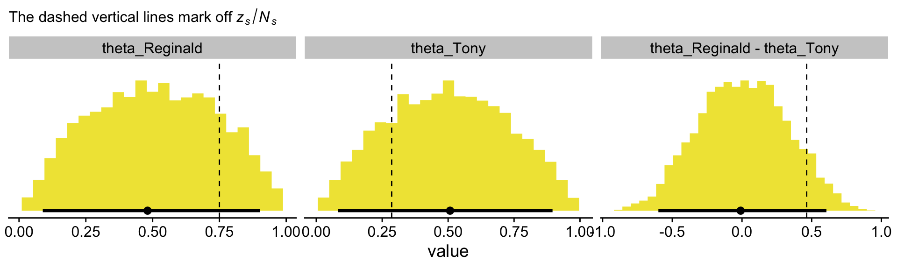
Here’s how you might make the scatter plot.
draws |>
rename(theta_Reginald = b_sReginald,
theta_Tony = b_sTony) |>
ggplot(aes(x = theta_Reginald, y = theta_Tony)) +
geom_point(alpha = 1/4, color = colorblind_pal()(8)[6]) +
coord_equal() +
theme_minimal_grid()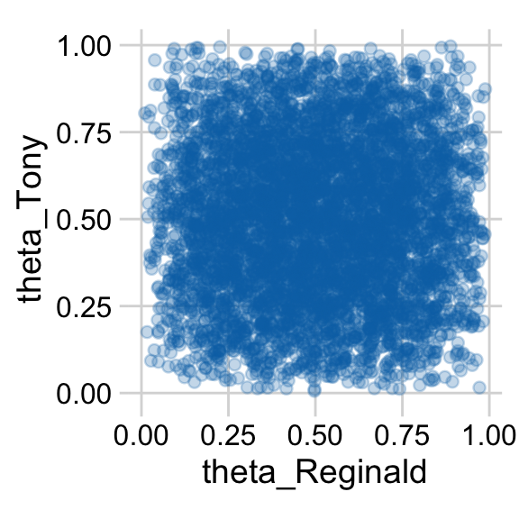
Or you could always use a two-dimensional density plot with stat_density_2d().
draws |>
rename(theta_Reginald = b_sReginald,
theta_Tony = b_sTony) |>
ggplot(aes(x = theta_Reginald, y = theta_Tony)) +
stat_density_2d(aes(fill = stat(density)),
geom = "raster", contour = FALSE) +
scale_fill_viridis_c(option = "B", breaks = NULL) +
scale_x_continuous(expression(theta[1]),
breaks = 0:4 / 4, expand = c(0, 0),
labels = c("0", ".25", ".5", ".75", "1"), limits = c(0, 1)) +
scale_y_continuous(expression(theta[2]),
breaks = 0:4 / 4, expand = c(0, 0),
labels = c("0", ".25", ".5", ".75", "1"), limits = c(0, 1)) +
coord_equal() +
theme_minimal_grid()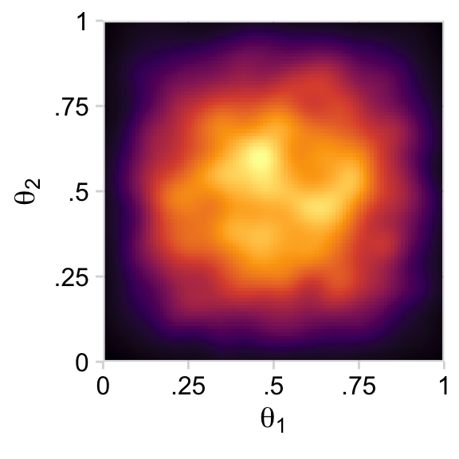
The viridis color palettes in functions like scale_fill_viridis_c() and scale_fill_viridis_d() are designed to be colorblind safe, too (Garnier, 2021).
8.6 Probability distributions available in JAGS brms
[brms] has a large collection of frequently used probability distributions that are built-in. These distributions include the beta, gamma, normal, Bernoulli, and binomial along with many others. A complete list of distributions, and their [brms] names, can be found in [Bürkner’s (2022b) vignette Parameterization of response distributions in brms]. (Kruschke, 2015, pp. 213–214, emphasis added)
8.6.1 Defining new likelihood functions
In addition to all the likelihood functions listed in above mentioned vignette, you can also make your own likelihood functions. Bürkner explained the method in his (2022c) vignette, Define custom response distributions with brms.
8.7 Faster sampling with parallel processing in runjags brms::brm()
We don’t need to open another package to sample in parallel in brms. In fact, we’ve already been doing that. Take another look at the code use used for the last model, fit8.2.
fit8.2 <- brm(
data = my_data,
family = bernoulli(identity),
y ~ 0 + s,
prior(beta(2, 2), class = b, lb = 0, ub = 1),
iter = 2000, warmup = 500, cores = 4, chains = 4,
seed = 8,
file = "fits/fit08.02")See the cores = 4, chains = 4 arguments? With that bit of code, we told brms::brm() we wanted 4 chains, which we ran in parallel across 4 cores.
8.8 Tips for expanding JAGS brms models
I’m in complete agreement with Kruschke, here:
Often, the process of programming a model is done is stages, starting with a simple model and then incrementally incorporating complexifications. At each step, the model is checked for accuracy and efficiency. This procedure of incremental building is useful for creating a desired complex model from scratch, for expanding a previously created model for a new application, and for expanding a model that has been found to be inadequate in a posterior predictive check. (p. 218)
Session info
sessionInfo()R version 4.5.1 (2025-06-13)
Platform: aarch64-apple-darwin20
Running under: macOS Ventura 13.4
Matrix products: default
BLAS: /Library/Frameworks/R.framework/Versions/4.5-arm64/Resources/lib/libRblas.0.dylib
LAPACK: /Library/Frameworks/R.framework/Versions/4.5-arm64/Resources/lib/libRlapack.dylib; LAPACK version 3.12.1
locale:
[1] en_US.UTF-8/en_US.UTF-8/en_US.UTF-8/C/en_US.UTF-8/en_US.UTF-8
time zone: America/Chicago
tzcode source: internal
attached base packages:
[1] stats graphics grDevices utils datasets methods base
other attached packages:
[1] ggthemes_5.1.0 tidybayes_3.0.7 bayesplot_1.14.0 brms_2.23.0 Rcpp_1.1.0 cowplot_1.2.0 patchwork_1.3.2
[8] lubridate_1.9.4 forcats_1.0.1 stringr_1.6.0 dplyr_1.1.4 purrr_1.2.0 readr_2.1.5 tidyr_1.3.1
[15] tibble_3.3.0 ggplot2_4.0.1 tidyverse_2.0.0
loaded via a namespace (and not attached):
[1] Rdpack_2.6.4 gridExtra_2.3 inline_0.3.21 sandwich_3.1-1 rlang_1.1.6
[6] magrittr_2.0.4 multcomp_1.4-29 ggridges_0.5.7 matrixStats_1.5.0 compiler_4.5.1
[11] loo_2.8.0 reshape2_1.4.4 vctrs_0.6.5 pkgconfig_2.0.3 arrayhelpers_1.1-0
[16] crayon_1.5.3 fastmap_1.2.0 backports_1.5.0 labeling_0.4.3 utf8_1.2.6
[21] threejs_0.3.4 promises_1.3.3 rmarkdown_2.30 markdown_2.0 tzdb_0.5.0
[26] nloptr_2.2.1 bit_4.6.0 xfun_0.53 jsonlite_2.0.0 later_1.4.4
[31] parallel_4.5.1 R6_2.6.1 dygraphs_1.1.1.6 stringi_1.8.7 RColorBrewer_1.1-3
[36] StanHeaders_2.32.10 boot_1.3-31 estimability_1.5.1 rstan_2.32.7 knitr_1.50
[41] zoo_1.8-14 base64enc_0.1-3 httpuv_1.6.16 Matrix_1.7-3 splines_4.5.1
[46] igraph_2.2.0 timechange_0.3.0 tidyselect_1.2.1 rstudioapi_0.17.1 abind_1.4-8
[51] yaml_2.3.10 codetools_0.2-20 miniUI_0.1.2 curl_7.0.0 pkgbuild_1.4.8
[56] plyr_1.8.9 lattice_0.22-7 shiny_1.11.1 withr_3.0.2 bridgesampling_1.1-2
[61] S7_0.2.1 posterior_1.6.1 coda_0.19-4.1 evaluate_1.0.5 survival_3.8-3
[66] RcppParallel_5.1.11-1 ggdist_3.3.3 xts_0.14.1 pillar_1.11.1 tensorA_0.36.2.1
[71] checkmate_2.3.3 DT_0.34.0 stats4_4.5.1 reformulas_0.4.1 shinyjs_2.1.0
[76] distributional_0.5.0 generics_0.1.4 vroom_1.6.6 hms_1.1.4 rstantools_2.5.0
[81] scales_1.4.0 minqa_1.2.8 gtools_3.9.5 xtable_1.8-4 glue_1.8.0
[86] emmeans_1.11.2-8 tools_4.5.1 shinystan_2.6.0 lme4_1.1-37 colourpicker_1.3.0
[91] mvtnorm_1.3-3 grid_4.5.1 rbibutils_2.3 QuickJSR_1.8.1 crosstalk_1.2.2
[96] colorspace_2.1-2 nlme_3.1-168 cli_3.6.5 svUnit_1.0.8 viridisLite_0.4.2
[101] Brobdingnag_1.2-9 V8_8.0.1 gtable_0.3.6 digest_0.6.37 TH.data_1.1-4
[106] htmlwidgets_1.6.4 farver_2.1.2 htmltools_0.5.8.1 lifecycle_1.0.4 mime_0.13
[111] rstanarm_2.32.2 shinythemes_1.2.0 bit64_4.6.0-1 MASS_7.3-65